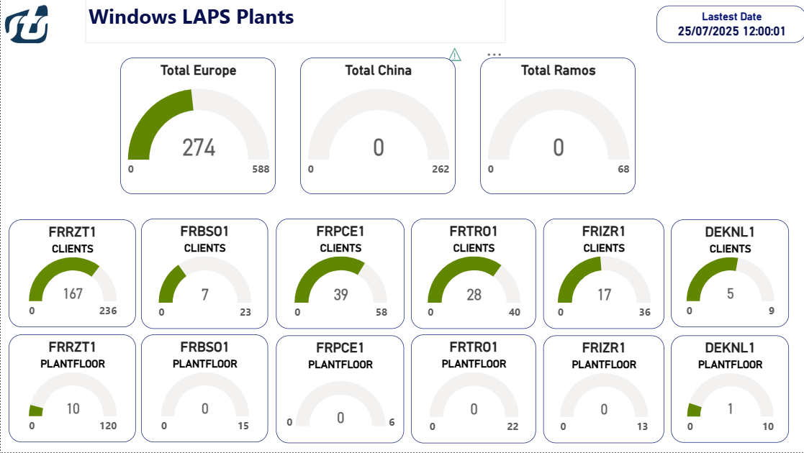

Mise en place de Windows LAPS
Mission effectuée – Année 2025
Présentation du projet
Dans un environnement professionnel, la sécurité des comptes administrateurs locaux est cruciale. L’utilisation de mots de passe identiques sur plusieurs machines augmente les risques de compromission en cas de fuite ou d’attaque.
C'est pour cela que ,lors de mon stage chez STS Composite , j'ai été chargé de mettre en place une solution choisis par l'entreprise pour réduire ces même risque.
J’ai donc été chargé de mettre en place Windows LAPS, une solution Microsoft qui permet d’attribuer à chaque machine un mot de passe administrateur local unique, chiffré, stocké dans Active Directory, et renouvelé automatiquement.
Cette mission m’a permis de mener un projet complet : étude technique, tests, documentation, déploiement, suivi et présentation finale.
Fonctionnement de Windows LAPS
Windows LAPS est une évolution de LAPS Legacy, directement intégrée aux versions récentes de Windows (post avril 2023). Il permet de :
- Générer un mot de passe aléatoire et sécurisé pour le compte administrateur local
- Stocker ce mot de passe chiffré dans un attribut d’Active Directory
- Renouveler ce mot de passe à intervalles réguliers
- Le rendre accessible uniquement à certains groupes (administrateurs, techniciens, etc.)
Méthodologie
- Recherche sur les fonctionnalités de Windows LAPS
- Étude de compatibilité des systèmes
- Installation sur un environnement de test
- Création d’une GPO dédiée
- Vérification du bon fonctionnement et de la remontée des mots de passe dans AD
- Documentation complète (runbook, guide de déploiement)
- Déploiement progressif en production
Déploiement de Windows LAPS
1. Recherche et vérification de la compatibilité
Avant toute chose, j'ai dû me documenter.
Cette nouvelle version de LAPS, arrivée le 11 avril 2023, est désormais intégrée nativement à
certaines versions de Windows
(comme Windows 11 23H2), ou apportée via mises à jour post-avril 2023.
Contrairement à l’ancienne version dite "Legacy", elle ne nécessite plus de logiciel tiers, mais
uniquement une configuration
côté contrôleur de domaine et via GPO.
J'ai donc créé un tableau Excel référençant tous les systèmes d’exploitation présents dans
l’entreprise,
ainsi que le nombre de machines pour chaque version. Ce tableau indiquait aussi la compatibilité
avec les deux versions de LAPS.
Cela a permis à l’entreprise de choisir la version Windows LAPS, plus simple à déployer et plus
efficace.
2. Rédaction de la documentation et du runbook
Une fois la version choisie, j’ai rédigé une documentation technique détaillant toutes les étapes nécessaires à la mise en place de Windows LAPS dans l’entreprise. Cette documentation comprend :
- Les prérequis techniques (version OS, droits AD, etc.).
- Les commandes PowerShell utilisées pour donner des permissions.
- Les captures d’écran pour chaque étape, afin de faciliter la compréhension. (ajoutées pendant le déploiement test)
- Les erreurs fréquentes rencontrées et comment les corriger.

En complément, j’ai rédigé un runbook synthétique : un document opérationnel destiné à être suivi étape par étape en production. Il permet à n’importe qui de reproduire le déploiement sans avoir à consulter l’ensemble de la documentation technique .

3. Étapes techniques principales du déploiement de LAPS
Voici les grandes étapes techniques réalisées dans le cadre du déploiement :
- Mise à jour du schéma Active Directory pour ajouter les nouveaux attributs nécessaires à Windows LAPS.
-
Vérification de la présence des attributs LAPS dans l’AD

- Attribution des différente permissions comme des droits permettant de lire ou de réinitialiser les mots de passe dans Active Directory.
-
Création et liaison de la GPO :
Une stratégie de groupe (GPO) dédiée a été créée via la console GPMC.
Nous avons accédé aux paramètres de LAPS, disponibles dans l’éditeur de GPO sous
(Configuration de l’ordinateur > Paramètres Windows > Paramètres de sécurité > Windows LAPS).
Paramètres LAPS configurés dans la GPO La GPO est ensuite liée aux OU contenant les ordinateurs cibles pour appliquer la stratégie.
Pour chaque OU , il sera nécessaire d'attribué les permissions nécessaires et lier la GPO correspondante .
4. Test de déploiement en environnement contrôlé
Avant de généraliser le déploiement, une phase de test a été réalisée sur une OU dédiée contenant trois ordinateurs.
- Deux machines étaient compatibles avec la version Windows LAPS.
- Une machine était incompatible et a été utilisée pour observer le comportement dans ce cas (aucune action, absence de mot de passe généré).
Cette étape a permis de vérifier que :
- - Les mots de passe étaient bien générés et stockés dans l’AD.
- - Les permissions étaient correctement configurées.
- - La politique de mot de passe définie dans la GPO s’appliquait bien sur les postes compatibles.
- - La machine non compatible restait sans effet, ce qui évite les erreurs de déploiement non maîtrisé.
Déploiement global
Une fois le test validé, le déploiement a été effectué progressivement sur l’ensemble des unités d’organisation cibles. Pour chaque OU, la GPO a été liée, et les droits nécessaires ont été accordés aux groupes d’administration désignés.
Le runbook et la documentation ont été utilisés comme support pour garantir la reproductibilité de l’opération, en assurant que chaque étape était correctement suivie.
Suivi du déploiement
Après le déploiement j'ai du créer un script PowerShell pour automatiser le suivi du déploiement de LAPS sur l’ensemble des sites de STS (France, Chine, Mexique). Ce script permet de vérifier la présence de certain attribut LAPS sur chaque machine, et d'exporter les résultats dans un fichier CSV. Le fichier est ensuite utilisé pour générer un rapport d’état du déploiement sur Power BI.

Outils et compétences mobilisés
Outils
- Active Directory
- PowerShell
- GPMC (console de gestion des GPO)
- Windows Server 2022
Compétences techniques
- Administration système
- Déploiement de politiques de sécurité
- Analyse de logs (Event Viewer)
- Scripting PowerShell
Compétences transversales
- Travail en autonomie
- Recherche documentaire
- Rédaction technique
- Esprit d’analyse
Problèmes rencontrés
Compatibilité des postes : Certaines machines n’étaient pas à jour et ne prenaient pas en charge Windows LAPS. J’ai établi un inventaire précis pour trier les postes compatibles / incompatibles. Cela a permis de planifier les mises à jour nécessaires ou d’exclure certains équipements.
Appel des groupes : Lors des appel des groupes dans les commandes de permissions , la commande ne trouvait pas le groupe et ne pouvait donc pas s'éxecuter . Nous nous sommes rendu compte qu'il fallait entrer le nom du groupe précédé du nom de domaine , au lieux de rentrer le groupe "group_TEST" il fallait "mon.domaine\group_TEST" .
Rapport PingCastle : Après avoir déployer la solution LAPS dans tout les sites , le rapport de sécurité de PingCastle a remonté un problème avec certains ordinateurs qui avaient été ajouté manuellement par un utilisateur, cette action donnait des droits suplémentaires à cet utilisateur . Pour résoudre ce problème je me suis dans un premier temps renseigné sue ce que l'action d'ajouté une machine manuellement causait , j'ai découvert l'existence de l'attribut ms-DS-CreatorSID qui permet de savoir quel utilisateur a ajouter la machine , et les permissions suplémentaires qu'il avait. J'ai donc rédiger un mail aux personnes concernées pour expliquer le problème et leur donné un petit protocole pour retirer les permissions et vérifier le bon fonctionnement des ordinateurs après les modifications.Nous aurions pu automatisé cela , mais comme ca s'applique sur un petit échantillon de machine , il est préférable de le faire manuellement 1 par 1 pour une meilleure sécurité
Ce que j’ai appris
Ce projet m’a permis de mieux comprendre les enjeux de la sécurité système en entreprise. J’ai découvert les mécanismes de GPO avancés, l’intégration d’un outil Microsoft dans un environnement de production, et j’ai aussi développé mes compétences en communication technique en rédigeant une documentation claire et réutilisable.
SOURCES
TEST